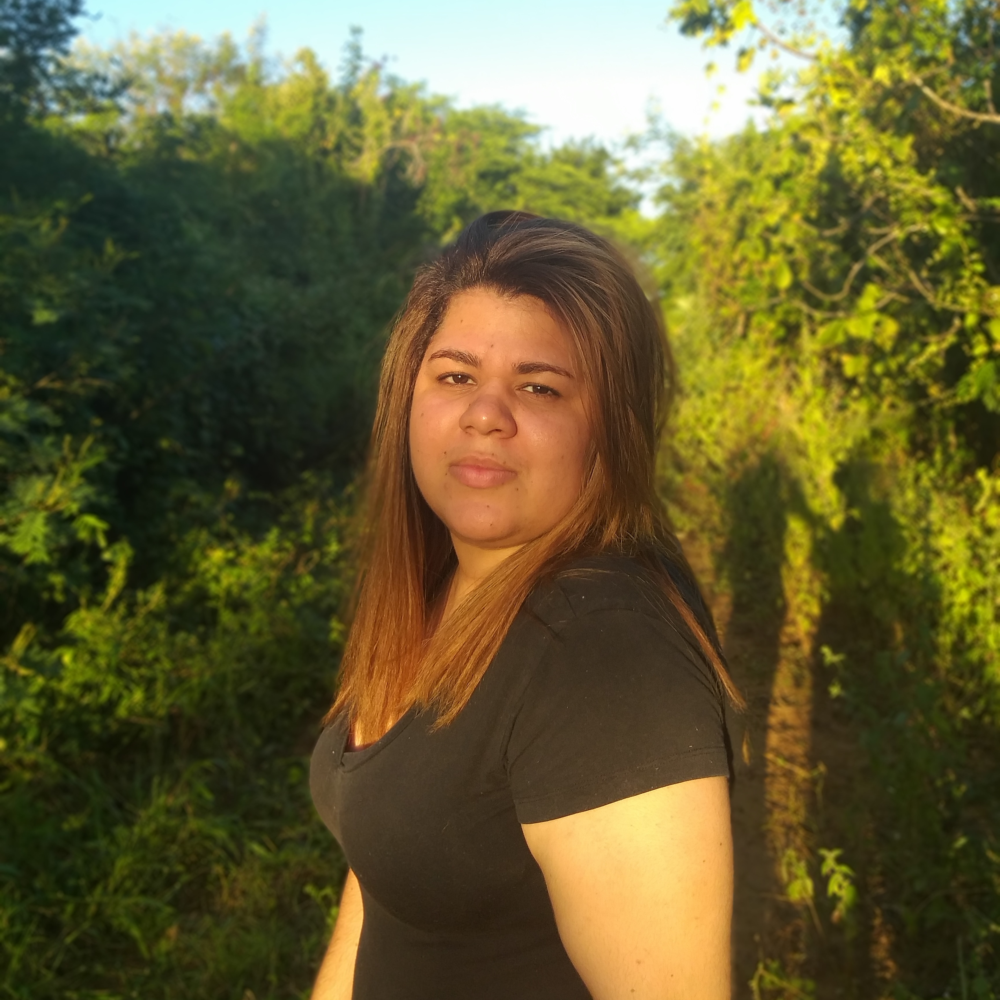
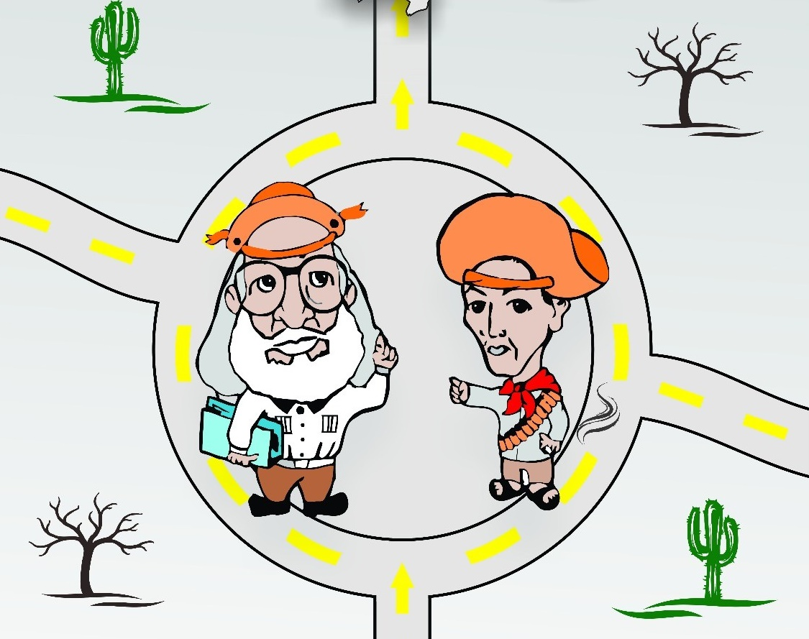

E-mail:
emelynfreire7@gmail.com
E-mail:
emelynfreire7@gmail.com
Linguagens de programação/marcação: Conhecimento em C++, JAVA, JavaScript, HTML, CSS. Conhecimento
mediano em PHP e Python.
Ferramentas de desenvolvimento: Netbeans, JSP, JSF, Django.
Banco de dados: Linguagen SQL, SGBD MySQL. E conhecimento em redes de computadores e suporte e manutenção de computadores.
Fez parte da Miniempresa Pocket Up S.A, incubada no IFRN e apoiada pela
Junior Achievement (2015).
Bolsista de extensão no IFRN no desenvolvimento de um website para a ACAPORD – Associação Camarense de Apoio aos Portadores de
Deficiência(2016). Na qual apresentou o trabalho no XI CONNEPI – (CONGRESSO NORTE NORDESTE DE PESQUISA E
INOVAÇÃO) (2016).
Foi voluntária no desenvolvimento de um site para o evento
BAKHTIN E PAULO
FREIRE – Diálogos na Região do Mato Grande (2017).
Bolsista de Apoio Administrativo e Técnico na Escola de Ciências e Tecnologia da UFRN
(desde março de 2019).
Ensino médio integrado em Informática, conclusão em 2016 – Instituto Federal de
Educação, Ciência e Tecnologia do Rio Grande do Norte (IFRN).
Atualmente cursando o Bacharelado em Ciências e Tecnologia, desde julho de 2017 – Universidade Federal do Rio Grande do Norte (UFRN).
Tecnologia em geral e enorme curiosidade na área de Engenharia da Computação e Tecnologia da informação
aplicados a economia e negócios tecnológicos .
Tem interesse em partipar de projetos científicos e de extensão que lidem com tecnologia em pesquisas
interdeciplinares.
Na área de desenvolvimento, gosta de trabalhar tanto com Front-end como Back-end.
Tem interesse de trabalhar com minorias sociais relacionando a Informática. Possuí
conhecimento elevado no desenvolvimento de sites com acessibilidade web.
 |
 |
|---|---|
DIÁLOGOS NA REGIÃO DO MATO GRANDE IF JOÃO CÂMARA |